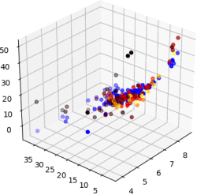

Multi Variable Regression¶

Introduction¶
Now as we saw in Linear Regression (Univariate Regression), we had only one independent feature or we can say we had only one explanatory variable, for our dependent variable.
In our house prediction dataset, we took only a single feature of Land Size and our house price was dependent on that, but talking about real life, we know that land size isn’t the only factor which affects the house price. There are a lot of other factors like: locality, no. of floors, society, hospitals availabily, water, electricity, hygiene, parking space, and there are a lot of other factors too that affect the house price. For that we will need something that can handle multiple features.
This is where Multi-Variable Regression comes in place. In Multi-variable Regression, we train our model by using more than one feature. In that case we’ll need multiple values of m & c, as we know every feature scales the price differently. So as every feature scales price differently, we can assign different weights to different features of X.
So now instead of predicting the values with the help of \(mx + c\), we have to use the equation:
\(y_{pred} = m_1x_1 + m_2x_2 + m_3x_3 + m_4x_4 + m_5x_5 + ..... m_nx_n + c\) (where n = no. of features)
and as we’re defining these \(m\) as weights, we will start calling them \(w\) instead. So now I can write my equation as:
\(y_{pred} = w_1x_1 + w_2x_2 + w_3x_3 + w_4x_4 + w_5x_5 + ..... w_nx_n + w_0\) (where n = no. of features)
\(y_{pred} = \sum_{i=1}^{n} w_ix_i + w_0\)
\(y_{pred} = \sum_{i=1}^{n} w_ix_i + w_0x_0 \hspace{1.5cm}\) [\(x_0 = 1\)]
\(y_{pred} = \sum_{i=0}^{n} w_ix_i\)
*Here I added the constant term \(w_0\) in the \(\sum\) to make calculation easier, for that I’ve to add a contant
1column to X
So now let’s see a data in which we have multiple features.
Loading the Dataset
import numpy as np
X = np.load("./Data/Multi-Variable Regression/X_data.npy")
y = np.load("./Data/Multi-Variable Regression/Y_data.npy")
X.shape, y.shape
((100, 3), (100,))
Data Visualisation¶
As X has multiple features, it is not possible to visulaize them all at once on a 2-D plot.
Here the shape of X is (100,3) which means our data has 3 independent explanatory variables. So here we cannot plot graph between X and y because here the visualisation between them becomes 4 dimensional.
X Looks Like:
[
[ 8.83205645, 8.76465601, 10.09153653, 1. ],
[ 9.01352254, 9.5813335 , 8.85015318, 1. ],
[ 9.30929403, 10.4272574 , 11.03505238, 1. ],
[ 9.043744 , 10.35861032, 9.03470043, 1. ],
[10.1568975 , 11.31259121, 10.57351177, 1. ],... 100 instances \])
y looks like:
[374.60735649, 390.97320007, 520.29176639, 422.60635903,602.22912664,... 100 instances] )
As we just saw, having multiple features in the data means we have to give multiple weights (one weight to every feature). So here our W will be a vector too, having the shape of (features, 1), and in this case i.e. (4,1)
So shapes of X, y and W are:
X => (100,4)
y => (100,)
W => (4,1)
*Note: (100,) and (100,1) are one and the same thing, it is a minor difference of how numpy processes the data.
Equating the Loss Function¶
Now we know that
\(y_{pred} = \sum_{i=0}^{n} w_ix_i\)
\(y_{pred}i = w_ix_i \hspace{1cm}\) (Note here \(x_i\) is a vector of shape (1,4) i.e. a single instance of X)
\(y_{pred} = XW \hspace{1.25cm}\)(X and W are vectors)
Let’s call \(y_{pred}\) as \(\hat{y}\) and \(y_{true}\) as \(y\), for solving the equations further
\(\hat{y} = XW\)
As per Linear Regression, my Loss is:
\(L = \sum_{i=1}^{n}(y_i - \hat{y}_i)^2\)
\(L = (y_1 - \hat{y}_1)^2 + (y_2 - \hat{y}_2)^2 + (y_3 - \hat{y}_3)^2 + ......... + (y_n - \hat{y}_n)^2\)
\(L = (y-\hat{y})^T(y-\hat{y})\hspace{1cm}\)(Since \(y\) and \(\hat{y}\) are vectors)
and we know \(\hat{y} = XW\), So the equation becomes:
\(L = (y-XW)^T(y-XW)\)
As we know we have to minimize our loss function, for that we have to find its minima by differentiating, but as we can see y, W and X are vectors. So, variable differentiation is not possible here, instead we have to find their Gradients/Jacobians (Vector Differentiation).
A short note on Gradients and Jacobians¶
Gradients:
As we call \(\dfrac{dy}{dx}\) of a function \(y = f(x)\) as first derivative, the gradient is the first derivative of a vector.
The gradient \(\triangledown f\) of a function \(f : \mathbb{R}^n → \mathbb{R}\) is the vector of its first partial derivatives.
The gradient matrix of a vector function \(f(x)\) that maps \(\mathbb{R}^n → \mathbb{R}\) where \(x \in \{x_1, x_2, .... x_n\}\) and \(f \in \{f_1, f_2, .... f_m\}\) is written as:
\(\triangledown_f = \dfrac{\partial (f_1,f_2,...,f_m)}{\partial (x_1,x_2,...,x_n)} = \begin{bmatrix} \frac{\partial f_1}{\partial x_1} & \cdots & \frac{\partial f_m}{\partial x_1}\\ \vdots & \ddots & \vdots \\ \frac{\partial f_1}{\partial x_n} & \cdots & \frac{\partial f_m}{\partial x_n}\\ \end{bmatrix}\)
Jacobians
Whereas the Jacobian is taken of a vector function \(f(x)\) that maps \(\mathbb{R}^n → \mathbb{R}\) where \(x \in \{ x_1, x_2, ..., x_n\}\) and \(f \in \{ f_1, f_2, ... , f_m \}\) is written as:
\(J_f = \dfrac{\partial (f_1,f_2,...,f_m)}{\partial (x_1,x_2,...,x_n)} = \begin{bmatrix} \frac{\partial f_1}{\partial x_1} & \cdots & \frac{\partial f_1}{\partial x_n}\\ \vdots & \ddots & \vdots \\ \frac{\partial f_m}{\partial x_1} & \cdots & \frac{\partial f_m}{\partial x_n}\\ \end{bmatrix}\)
\(\therefore (J_f)^T = \triangledown f\)
Minimizing the Loss¶
Now let’s get back to our loss function:
As the Loss function equation has only one variable W, rest X & y are constants, we’ve to find the value of W such that the value of Loss is minimum.
\(L(W) = (y-XW)^T(y-XW)\)
Simplifying the Loss Function:
\(L(W) = (y^T - (XW)^T)(y-XW)\)
\(L(W) = (y^T-W^TX^T)(y-XW)\)
\(L(W) = y^Ty - y^TXW - W^TX^Ty + W^TX^TXW\)
Now if we take a look at the shape of these terms
\(y^Ty => (1\times m) \times (m\times1) = 1 \times 1\)
\(y^TXW => (1\times m)\times(m \times n+1)\times(n+1 \times 1) = 1 \times 1\)
\(W^TX^Ty => (1\times n+1)\times(n+1 \times m)\times(m \times 1) = 1 \times 1\)
\(W^TX^TXW => (1\times n+1)\times(n+1 \times m)\times(m \times n+1)\times(n+1 \times 1) = 1 \times 1\)
*Having shape \(1 \times 1\) means these are just constant terms after evaluating
And as we know \([Constant]^T = [Constant]\)
So, \([W^TX^Ty]^T = W^TX^Ty\)
\(y^TXW = W^TX^Ty \hspace{2cm}\) => Putting this in above loss equation.
\(L(W) = y^Ty - y^TXW - y^TXW + W^TX^TXW\)
\(L(W) = y^Ty -2 [y^TXW] + W^TX^TXW\)
Finding the Gradient (Vector Derivative)¶
Now let’s find the gradient of this equation and equate it to 0 to find the minima.
\(\dfrac{\partial L}{\partial W} = 0\)
\(\dfrac{\partial L}{\partial W} = \dfrac{\partial (y^Ty)}{\partial W} - \dfrac{\partial (2[y^TXW])}{\partial W} + \dfrac{\partial (W^TX^TXW)}{\partial W}\)
Take a look at these terms
Explanation of all these derivatives is at the end after the derivation.*
\(\dfrac{\partial (y^Ty)}{\partial W} = 0\)
\(\dfrac{\partial (2[y^TXW])}{\partial W} = 2[y^TX]^T\)
\(\dfrac{\partial (W^TX^TXW)}{\partial W} = [(X^TX)^T + (X^TX)]W\)
\(0 = 0 - 2[y^TX]^T + [(X^TX)^T + (X^TX)]W\)
\(0 = 0 - 2[X^Ty] + [X^TX + X^TX]W\)
\(0 = 0 - 2[X^Ty] + 2[X^TXW]\)
\(2[X^Ty] = 2[X^TXW]\)
\(X^Ty = X^TXW\)
Multiplying \((X^TX)^{-1}\) on both sides.
\((X^TX)^{-1}(X^Ty) = (X^TX)^{-1}(X^TXW)\)
\((X^TX)^{-1}X^Ty = W\)
\(W = (X^TX)^{-1}X^Ty\)
Value of W for minimum Loss:¶
So to minimize the Loss [L(W)], we found that we have to put the value of W as:
\(W = (X^TX)^{-1}X^Ty\)
Explanation of the differentiated terms¶
1. \(y^Ty\)
As \(y^Ty\) has no term of \(W\), it will be treated as constant. Hence differentiated as 0.
So, \(\dfrac{\partial (y^Ty)}{\partial W} = 0 \hspace{1cm}\)
2. \(2[y^TXW]\)
As \(2y^TX\) is constant, let’s denote it with \(A\).
So, now we have to find \(\dfrac{\partial (AW)}{\partial W}\)
Let \(f(W) = AW \hspace{3cm}\) where \(A = \begin{bmatrix}p & q\\r & s\end{bmatrix}\) and \(W = \begin{bmatrix} w_1\\w_2 \end{bmatrix}\)\(f(W)=\begin{bmatrix} pw_1 + qw_2 \\ rw_1 + sw_2 \end{bmatrix}\)
Finding Gradient
\(\dfrac{\partial f(W)}{\partial W} = \begin{bmatrix} \dfrac{\partial (pw_1 + qw_2)}{\partial w_1} & \dfrac{\partial (rw_1 + sw_2)}{\partial w_1} \\ \dfrac{\partial (pw_1 + qw_2)}{\partial w_2} & \dfrac{\partial (rw_1 + sw_2)}{\partial w_2} \end{bmatrix}\)
\(\dfrac{\partial f(W)}{\partial W} = \begin{bmatrix} p & r \\ q & s \end{bmatrix}\)\(\dfrac{\partial f(W)}{\partial W} = A^T\)
So, \(\dfrac{\partial (AW)}{\partial W} = A^T \hspace{2cm}\) (Putting the Value of A)
\(\dfrac{\partial ([2y^TX]W)}{\partial W} = {[2y^TX]}^T\)
3. \(W^TX^TXW\)
As \(X^TX\) is constant, so let’s denote it with A
\(f(W) = W^TAW \hspace{5cm}\) where \(A = \begin{bmatrix}p & q\\r & s\end{bmatrix}\) and \(W = \begin{bmatrix} w_1\\w_2 \end{bmatrix}\)
\(f(W) = \begin{bmatrix} w_1 & w_2\end{bmatrix}\begin{bmatrix}p & q\\r & s\end{bmatrix}\begin{bmatrix} w_1\\w_2 \end{bmatrix}\)
\(f(W) = \begin{bmatrix} pw_1^2 + qw_2w_1 + rw_1w_2 + sw_2^2\end{bmatrix}\)
Finding Gradient\(\dfrac{\partial f(W)}{\partial W} = \begin{bmatrix} \dfrac{\partial(pw_1^2 + qw_2w_1 + rw_1w_2 + sw_2^2)}{\partial w_1} \\ \dfrac{\partial(pw_1^2 + qw_2w_1 + rw_1w_2 + sw_2^2)}{\partial w_2}\end{bmatrix}\)
\(\dfrac{\partial f(W)}{\partial W} = \begin{bmatrix} 2pw_1 + qw_2 + rw_2 \\ qw_1 + rw_1 + 2sw_2 \end{bmatrix}\)
On further Simplification
\(\dfrac{\partial f(W)}{\partial W} = \begin{bmatrix} 2pw_1 + qw_2 + rw_2 \\ qw_1 + rw_1 + 2sw_2 \end{bmatrix} = \begin{bmatrix} 2p & r+q \\ q+r & 2s \end{bmatrix} \begin{bmatrix}w_1 \\ w_2 \end{bmatrix}\)
\(\dfrac{\partial f(W)}{\partial W} = \begin{bmatrix} \begin{bmatrix} p & r \\ q & s\end{bmatrix} + \begin{bmatrix} p & q \\ r & s \end{bmatrix} \end{bmatrix}\begin{bmatrix}w_1 \\ w_2 \end{bmatrix}\)
\(\dfrac{\partial f(W)}{\partial W} = (A^T + A)W \hspace{4cm}\) (Putting the value of A)
\(\dfrac{\partial f(W)}{\partial W} = ([X^TX]^T + [X^TX])W\)
\(\dfrac{\partial (W^TX^TXW)}{\partial W} = ([X^TX]^T + [X^TX])W\)
Let’s Code Multi-variate Regression Model¶
Now as we’ve derived the value of W mathematically, let’s try to implement it’s code and apply it to a data.
\(\large{W = (X^TX)^{-1}X^Ty}\)
Before getting to the code part, remember we’ve to add an constant \(x_0\) column in our dataset, as we’ve seen at the time of derivation.
The constant column¶
As we just saw, as we assigned weights to every feature, We used \(w_1, w_2, w_3...\) instead of \(m_1,m_2,m_3...\) and we replaced the constant c with \(w_0\), and to make calculations easier we’ll just multiply \(x_0\) with \(w_0\) (where \(x_0 = 1\)). As this \(x_0\) is a column having every value 1, we’ve to add this in our dataset. This is a very common practice and we’ll see this further as well in other models.
Adding the constant column in dataset
ones_column = np.ones((X.shape[0],1))
X = np.hstack([X,ones_column])
X.shape, y.shape
((100, 4), (100,))
As we can see here X had shape (100,3), but after we added the constant term it became (100,4) which means now X has 3 features with a constant term for all the 100 instances. But as our y was the price of the house it still have constant values for all the 100 instances. So it has shape (100,)
Code¶
Now let’s write the code for the multi-variate regression model. Eventually we have to fit a plane in our data, so let’s define a function fit. And then we’ve to predict the values of the unseen data with the help of this plane, so we’ll define a predict function as well.
def fit(X,y):
W = np.linalg.inv(X.T.dot(X)).dot(X.T).dot(y)
return W
def predict(X,W):
return X.dot(W)
Now let’s train our model on our data, and try to predict a random point from the data.
W = fit(X,y)
prediction = predict(X[10],W)
print("Prediction => ",prediction)
print("True Value => ",y[10])
Prediction => 483.0905992868411
True Value => 482.4763357660064
As we can see, the prediction is very close to the true value of y, which means our model is performing very accurately.
Now we can also print the value of W, to see the corresponding weights of every feature, and as we added the constant column at the end, the last value of this W vector will be our constant term “c”.
print(W)
[ 85.83960823 37.51369037 45.03995795 -1157.7084498 ]
In simpler terms, we can say for the equation:
\(y = m_1x_1 + m_2x_2 + m_3x_3 + c\)
\(m_1 = 85.83960823\)
\(m_2 = 37.51369037\)
\(m_3 = 45.03995795\)
\(c = -1157.7084498\)
Recap¶
We’ve covered a lot about the multi-variate regression, so let’s sum up the concepts quickly.
First we found a loss function of our data by the help of equation of a plane, which came out to be \(L = (y-XW)^T(y-XW)\).
Then to find the optimal solution, we’ve to minimize this Loss function but as the parameters W, X and y of this loss were vectors, we had to take help of Gradients & Jacobians to find their minima.
We found that the values X and y were constant, so the Loss was totally dependent on W, so we had to find a value of W such that the Loss is minimum.
We found value of W, with the help of Gradients & Jacobians which came out to be \(W = (X^TX)^{-1}X^Ty\).
Using this value of W, we wrote a fit function which helps to find us the optimal parameters i.e. value of “W”.
Then we used the predict function finally, to predict the values of the unseen data.
Limitation of Multi-variate Regression¶
Currently, here we took a very small amount of points i.e. 100, and had only 3 features, but in real-life datasets, we have a lot more instances and features than this, which will require a lot of memory usage (mainly RAM usage), and in most of the cases our system RAM is not enough to load the entire dataset at once, and as it involves a lot of vector multiplication and inverse calculation, it is very computationally heavy and memory inefficient.
So to overcome this limitation, we use an optimization technique like Gradient Descent, which we’ll see in a later module.